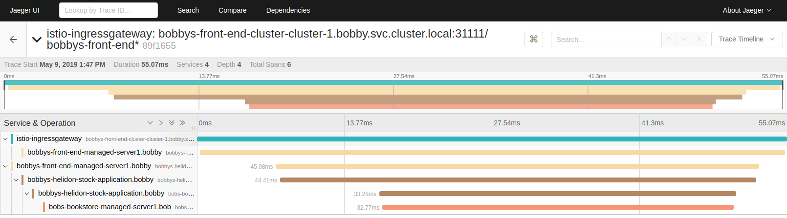

WebLogic Server Kubernetes Operatorバージョン2.6以降には、Istio 1.4.2以降のサポートが含まれています。 このサポートにより、Istioサイド・カー・インジェクションを有効にして、オペレータ、およびオペレータが管理するWebLogicドメインを実行できます。 Istioゲートウェイおよび仮想サービスを使用して、これらのドメインにデプロイされているアプリケーションにアクセスできます。 アプリケーションに適切なトレース・コードが含まれている場合は、Jaegerなどの分散トレースを使用して、ドメイン間およびトレースが有効になっている他のコンポーネントやサービスに対してリクエストをトレースすることもできます。
Istioの現在のサポートには、次の制限があります:
istio-ingressgatewayサービスにEXTERNAL-IPが定義されていない場合、WLSTコマンドを使用するには、WebLogicドメインでネットワーク・アクセス・ポイント(NAP)を定義し、Istioメッシュ・ネットワークを介してチャネルにアクセスするかわりに、ドメインYAMLファイルでNodePortとして公開し、NodePortを介してアクセスします。サービス・メッシュの詳細は、Istioを参照してください。
この手順では、Istioがすでにインストールおよび構成されているKubernetesクラスタを使用していることを前提としています。 オペレータはIstioをインストールしません。
Istio自動サイド・カー・インジェクションが有効になっているネームスペースにオペレータをデプロイできます。 オペレータをインストールする前に、ドメインを実行するネームスペースを作成し、ラベルを付けます。
$ kubectl create namespace weblogic-operator
$ kubectl label namespace weblogic-operator istio-injection=enabled
ネームスペースにラベルを付けた後、「オペレータのインストール」を使用できます。
オペレータ・ポッドが起動すると、Istioはistio-initと呼ばれるinitContainerおよびenvoyコンテナistio-proxyを自動的にインジェクトします。
これは、次のコマンドを使用して検証できます:
$ kubectl --namespace weblogic-operator get pods
$ kubectl --namespace weblogic-operator get pod weblogic-operator-xxx-xxx -o yaml
2番目のコマンドで、weblogic-operator-xxx-xxxをポッドの名前に変更します。
Istio自動サイド・カー・インジェクションを有効にして実行するようにドメインを構成できます。 ドメインを作成する前に、オペレータを実行するネームスペースを作成し、自動インジェクション用にラベルを付けます。
$ kubectl create namespace domain1
$ kubectl label namespace domain1 istio-injection=enabled
ドメインのIstioサポートを有効にするには、次の例に示すように、ドメイン・カスタム・リソースYAMLファイルにconfigurationセクションを追加する必要があります:
apiVersion: "weblogic.oracle/v8"
kind: Domain
metadata:
name: domain2
namespace: domain1
labels:
weblogic.domainUID: domain2
spec:
... other content ...
configuration:
istio:
enabled: true
readinessPort: 8888
Istioサポートを有効にするには、istioセクションを含め、次に示すようにenabled: trueを設定する必要があります。 readinessPortはオプションで、指定しない場合は8888にデフォルト設定され、レディネス・ヘルス・チェックに使用されます。
Istioはポッドにいくつかの要件を強制しています。 ドメインYAMLファイルでIstioサポートを有効にすると、イントロスペクタ・ジョブによって、Istioの要件を満たすためにドメインに必要なチャネルで構成オーバーライドが自動的に作成されます:
Istioサイド・カー・インジェクションを有効にしてドメインをデプロイすると、オペレータは構成オーバーライドを使用して次のネットワーク・チャネルを自動的に追加します。
https://istio.io/latest/docs/ops/configuration/traffic-management/protocol-selection/
非SSLトラフィックの場合:
| 名前 | ポート | プロトコル | コンテナ・ポートとして公開 |
|---|---|---|---|
http-probe |
構成Istio readinessPortから |
http |
いいえ |
tcp-default |
サーバー・リスニング・ポート | t3 |
はい |
http-default |
サーバー・リスニング・ポート | http |
はい |
tcp-snmp |
サーバー・リスニング・ポート | snmp |
はい |
tcp-cbt |
サーバー・リスニング・ポート | CLUSTER-BROADCAST |
いいえ |
tcp-iiop |
サーバー・リスニング・ポート | http |
いいえ |
SSLトラフィックの場合、サーバーでSSLが有効になっていると、次のようになります:
| 名前 | ポート | プロトコル | コンテナ・ポートとして公開 |
|---|---|---|---|
tls-default |
サーバーSSLリスニング・ポート | t3s |
はい |
https-secure |
サーバーSSLリスニング・ポート | https |
はい |
tls-iiops |
サーバーSSLリスニング・ポート | iiops |
いいえ |
tls-ldaps |
サーバーSSLリスニング・ポート | ldaps |
いいえ |
tls-cbts |
サーバー・リスニング・ポート | CLUSTER-BROADCAST-SECURE |
いいえ |
管理サーバーでWebLogic管理ポートが有効になっている場合:
| 名前 | ポート | プロトコル | コンテナ・ポートで公開 |
|---|---|---|---|
https-admin |
WebLogic管理ポート | https |
はい |
また、ドメインに対してIstioサポートが有効になっている場合、オペレータはIstioサイド・カーがイントロスペクタ・ジョブのポッドにインジェクトされないようにします。
ドメインYAMLファイルが変更されたら、次のようにして適用します:
kubect apply -f domain.yaml
すべてのサーバーが起動すると、次のような出力が表示されます:
kubectl -n sample-domain1-ns get pods
NAME READY STATUS RESTARTS AGE
sample-domain1-admin-server 2/2 Running 0 154m
sample-domain1-managed-server1 2/2 Running 0 153m
sample-domain1-managed-server2 2/2 Running 0 153m
istioctl proxy-statusを使用している場合は、メッシュ・ステータスが表示されます:
istioctl proxy-status
NAME CDS LDS EDS RDS PILOT VERSION
istio-ingressgateway-5c7d8d7b5d-tjgtd.istio-system SYNCED SYNCED SYNCED NOT SENT istio-pilot-6cfcdb75dd-87lqm 1.5.4
sample-domain1-admin-server.sample-domain1-ns SYNCED SYNCED SYNCED SYNCED istio-pilot-6cfcdb75dd-87lqm 1.5.4
sample-domain1-managed-server1.sample-domain1-ns SYNCED SYNCED SYNCED SYNCED istio-pilot-6cfcdb75dd-87lqm 1.5.4
sample-domain1-managed-server2.sample-domain1-ns SYNCED SYNCED SYNCED SYNCED istio-pilot-6cfcdb75dd-87lqm 1.5.4
weblogic-operator-7d86fffbdd-5dxzt.sample-weblogic-operator-ns SYNCED SYNCED SYNCED SYNCED istio-pilot-6cfcdb75dd-87lqm 1.5.4
ドメインがIstioサポートで実行されている場合、Traefikなどのイングレス・コントローラを使用するかわりに、Istioイングレス・ゲートウェイを使用してアプリケーションへの外部アクセスを提供する必要があります。 Istioイングレス・ゲートウェイを使用すると、Kialiでトラフィックを表示し、エントリ・ポイントからクラスタへの分散トレースを使用することもできます。
ドメインへの外部アクセスを構成するには、次の例に示すように、Istio GatewayおよびVirtualServiceを作成する必要があります:
---
apiVersion: networking.istio.io/v1alpha3
kind: Gateway
metadata:
name: domain1-gateway
namespace: domain1
spec:
selector:
istio: ingressgateway
servers:
- hosts:
- '*'
port:
name: http
number: 80
protocol: HTTP
---
apiVersion: networking.istio.io/v1alpha3
kind: VirtualService
metadata:
name: domain1-virtualservice
namespace: domain1
spec:
gateways:
- domain1-gateway
hosts:
- '*'
http:
- match:
- uri:
prefix: /console
- port: 7001
route:
- destination:
host: sample-domain1-admin-server.sample-domain1-ns.svc.cluster.local
port:
number: 7001
- match:
- uri:
prefix: /testwebapp
- port: 8001
route:
- destination:
host: sample-domain1-cluster-cluster-1.domain1.svc.cluster.local
port:
number: 8001
この例では、ポート80でHTTPを使用して任意のホスト名のリクエストを受け入れるゲートウェイと、これらのすべてのリクエストをネームスペースdomain1のcluster-1のクラスタ・サービスにルーティングする仮想サービスを作成します。 ノート: 本番環境では、hostsを適切なDNS名に制限する必要があります。
ゲートウェイおよび仮想サービスを設定したら、イングレス・ホストおよびポートを介してアクセスできます。 「イングレスIPおよびポートの決定」を参照してください。
Istioを使用したイングレスの提供の詳細は、「Istioドキュメント」を参照してください。
Istioは、Kialiでトラフィックをビジュアル化する機能など、トラフィック管理機能を提供します。 この機能を使用するためにアプリケーションを変更する必要はありません。 ポッドにインジェクトされたIstioプロキシ(envoy)サイド・カーが提供します。 次の図は、トラフィックが流れる例を示しています: 左側のIstioゲートウェイからdomain1というドメインに移動します。
この例では、トラフィックがどのようにクラスタ・サービスに流れ、次に個々の管理対象サーバーに流れるかを確認できます。
詳細は、「Istioトラフィック管理」を参照してください。
Istioは、Jaegerでトレースを表示する機能など、分散トレース機能を提供します。 ただし、分散トレースを使用するには、まず「Jaeger Javaクライアント」などを使用してWebLogicアプリケーションをインスツルメント化する必要があります。 次の図は、前述の図と同じシステム・パスに続くトランザクションを示す分散トレースの例を示しています。

詳細は、「Istioでのトレースの分散」を参照してください。
{kind=link}